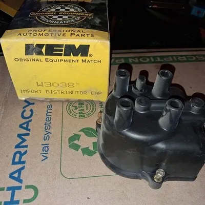
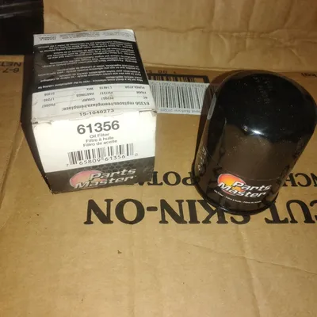
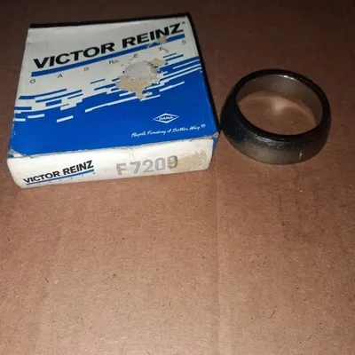

Distributor Rotors
1988-1991 KEM W2083 Distributor Rotor NOS Honda Civic CRX Integra 1.5 1.6 1.8
W2083
Fits 1988-1990 Acura Integra · 1988-1991 Honda CRX (62 listed)
$14.99
View details23 parts whose listing names at least one Acura vehicle, mostly ignition & tune-up, engine parts and oil filters. Fit depends on year, model and engine, so check the full vehicle list on each part page or message us before you buy.
23 parts
Online checkout through Square. Ships from Carbondale, PA, or pick up by confirmed appointment only. Fitment question? Message us.
W2083
Fits 1988-1990 Acura Integra · 1988-1991 Honda CRX (62 listed)
$14.99
View details
W298
Fits 1986-1987 Acura Integra · 1981-1989 Honda Accord (144 listed)
$12.99
View details
16400-RWC-A02
Fits 2007-2012 Acura RDX (9 listed)
$49.99
View details
9080
Fits 1986-1992 Acura Integra · 1986-1990 Acura Legend (223 listed)
$14.99
View details
103-2461
Fits 1986-1990 Acura Legend (29 listed)
$25.99
View details
14082
Fits 1986-2001 Acura Integra · 1986-1995 Acura Legend (2063 listed)
$12.99
View details
31109
Fits 1986-2001 Acura Integra · 1997-1999 Acura CL (3001 listed)
$18.99
View details
31527
Fits 1986-1989 Acura Integra · 1972-1977 Audi 100 Series (3000 listed)
$16.99
View details
31528
Fits 1986-1989 Acura Legend · 1973-1985 Buick Century (3001 listed)
$12.99
View details
31720
Fits 1986-1993 Acura Integra · 1986-1990 Acura Legend (3001 listed)
$21.99
View details
33568
Fits 1998-1999 Acura CL · 2000 Acura EL (225 listed)
$14.99
View details
W3038
Fits 1990-1991 Acura Integra · 1988-1991 Honda CRX (25 listed)
$16.99
View details
CV4405
Fits 1986-1996 Acura Integra · 1986-1989 Honda Accord (98 listed)
$19.99
View details
61356
Fits 2013-2016 Acura ILX · 2003-2016 Acura MDX (46 listed)
$12.99
View details
JH-151
Fits 1988-1991 Acura Integra · 1988-1991 Honda CRX (68 listed)
$28.99
View details
JH95
Fits 1990-1991 Acura Integra · 1988-1991 Honda CRX (52 listed)
$24.99
View details
JR89
Fits 1986-1987 Acura Integra · 1981-1989 Honda Accord (80 listed)
$16.99
View details
AS5
Fits 1996-1997 Acura SLX · 1982-1997 Chevrolet Camaro (706 listed)
$53.99
View details
SG12
Fits 1986-1991 Acura Integra · 1984-1989 Honda Accord (75 listed)
$24.99
View details
F7209
Fits 2013-2015 Acura ILX · 2012-2015 Honda Civic (48 listed)
$17.99
View details
24815
Fits 2014-2020 Acura MDX · 2013-2022 Acura ILX (466 listed)
$21.99
View details
51334ST
Fits 1997-2002 Acura CL · 1998-2000 Acura EL (149 listed)
$21.99
View details
51392
Fits 1986-1987 Acura Integra · 1979-1983 Honda Accord (99 listed)
$19.99
View details